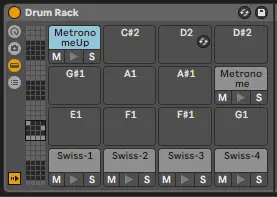

SousaPlayback
SousaPlayback is a template for Ableton Live that handles a talkback mic, reference tracks, backing tracks, drum loops & FX, risers, count-ins, recordings, and network jamming plugins. It tightly syncs to SousaFX & SousaVFX via various gamepad bindings and audio envelopes.
{kind=link}
You may want to save a copy of SousaPlayback to ~/Music/Ableton/Projects/, and set it to auto-launch via SousaFX’s Startup Preferences. That way you won’t have to worry about overwriting the default project file when updating SousaFX.
Main Track List
talkback mic
This track has a simple channel strip for a talkback mic. This channel is sidechained to several compressors on other tracks to mute audio while you’re speaking. The talkback mic is auto-muted when the tuba starts playing, and must be manually unmuted after the tuba stops playing. The “v” key mutes and unmutes the talkback mic while either SousaFX or SousaPlayback are focused.
playback bus
reference tracks
This audio track is available for any reference tracks that you may want to add.
backing tracks
stems
This audio track is available for any backing tracks that you may want to add.
automation
This audio track contains a MIDI device that lets you automate two aspects of SousaFX: The Mix Bus mutes and gains, and the Main Preset number.
This device also sends BPM data to SousaFX.

trig
These clips help SousaFX know when the end of a 8 or 16 bar fadeout is while the tempo’s changing.
tempo
The “tempo_auto” device allows you to automate Live’s (and SousaFX’s) tempo via clips. SousaFX’s Looper can auto-trigger these clips to change the tempo while fading out, after a certain amount of loops have been recorded.
The “tempo_auto” device also allows Live Link to be enabled on startup.
click
A MIDI track with a drum rack that lets you program custom click tracks if needed. The “1 2 3 4” that counts down to the end of the Looper’s fadeout is the voice of Swiss Chris.

drum SC vox
Sidechains the talkback mic to the drum bus before sending it to Return Track A and C.
drum bus
Groups the percussion tracks and sends them through EQ, filters, reverb, tremolo, delay, risset, and compressor.
Twelve effect parameters are available in SousaFX’s bindings.
Drum Clip Crossfade (bi)
Drum Clip Filters (bi)
Drum Clip Stutter Enable (trig)
Drum Clip Tremolo Depth (uni)
Drum Clip Tremolo Duty (bi)
Drum Clip Delay Send (uni)
Drum Clip Delay Param (bi)
Drum Clip Reverb Send (uni)
Drum Clip Reverb Param (bi)
mute drumloops
toggle continuous accelerando
sousa mic
Record the uneffected tuba mic into this track, and playback the recorded clip into SousaFX to allow yourself to fine-tune the effects and bindings without having to play the tuba.
This track’s “Audio To: Ext. Out” should loopback to SousaFX’s “prerecorded mic” input, and SousaFX’s Audio IO Status’ input menu should be set to
prerecorded mic.silentbrass
Record the uneffected silentbrass mic into this track, and playback the recorded clip into SousaFX to allow yourself to fine-tune the effects and bindings without having to play the tuba.
This track’s “Audio To: Ext. Out” should loopback to SousaFX’s “prerecorded silentbrass” inputs, and SousaFX’s Audio IO Status’ input menu should be set to
prerecorded silentbrass.
sync signal
Syncs SousaPlayback to SousaFX via a 1-bar audio-rate phasor that ramps from 0 to 1 in lieu of Live Link.
This track’s “Audio To: Ext. Out” should loopback to SousaFX’s “phasor~ from Ableton” input. To enable this, Set SousaFX’s Metronome’s Tempo Source to “Ableton’s Tempo”, set the Live Link menu to Audio Input, and turn off auto-link in SousaPlayback’s tempo track.
Return Track List
Monitor
This track’s “Audio To: Ext. Out” should be routed to your audio interface’s headphone output.
The monitor mix, adjusted via the A sends from talkback mic, playback bus, click, MAIN REC, and NETWORK tracks.
The “playback bus” monitor send volume is also saved in SousaFX’s Monitor Mix.
Network
Place network jamming plugins here.
Note
To mute yourself in JamTaba’s monitor mix, mute the input channel, but keep the volume slider at 0 dB. Participants will still be able to hear your audio even though the input channel won’t show a signal.
Main Out
This track’s “Audio To: Ext. Out” should be routed to your audio interface’s main output.
The “front of house” mix, adjusted via the C sends from talkback mic, playback bus, MAIN REC, and NETWORK tracks.
{kind=link}